<ion-header>

  <ion-toolbar>

    <ion-buttons slot="start" >
      <ion-button routerLink="/home">home<ion-icon name="home-outline"></ion-icon></ion-button>
    </ion-buttons>

    <ion-title>Missioni</ion-title>
  </ion-toolbar>

</ion-header>

<ion-content [fullscreen]="true">

  <ion-fab vertical="bottom" horizontal="end" slot="fixed">
    <ion-fab-button routerLink="/missione-aggiungi">
      <ion-icon name="add"></ion-icon>
    </ion-fab-button>
  </ion-fab>

  <ion-list lines="none">

    <ion-item-sliding *ngFor="let missione of missioni">

      <ion-item class="no padding" >

        <ion-thumbnail slot="start">
          
        </ion-thumbnail>
  
        <ion-label [routerLink]="['/missione-consulta/', missione.id]" text-wrap>
          <h2>{{missione.titolo}}</h2>
          <p>{{missione.tipo}}</p>              
        </ion-label>

      </ion-item>

      <ion-item-options side="end">
        <ion-item-option color="danger" (click)="deleteMissione(missione.id)">
          <ion-icon slot="icon-only" name="trash"></ion-icon>
        </ion-item-option>
      </ion-item-options>

    </ion-item-sliding>

  </ion-list>

</ion-content>
